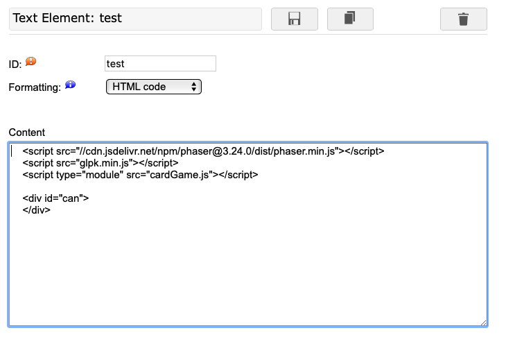
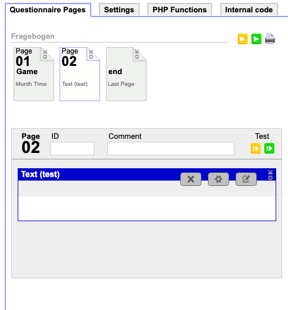
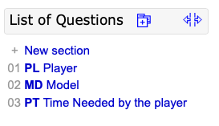
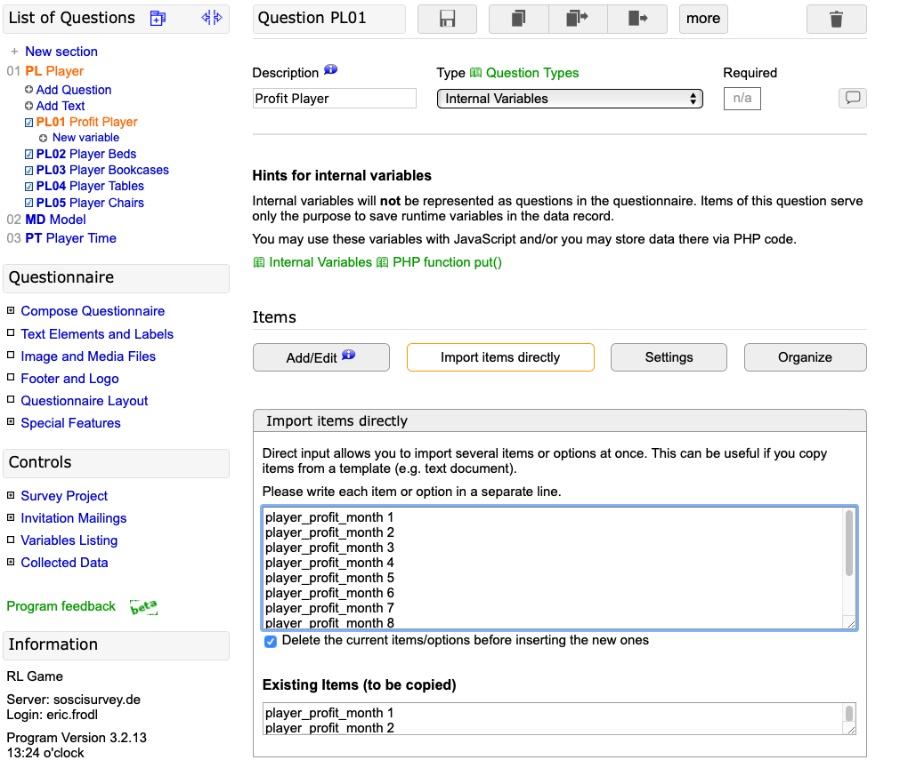
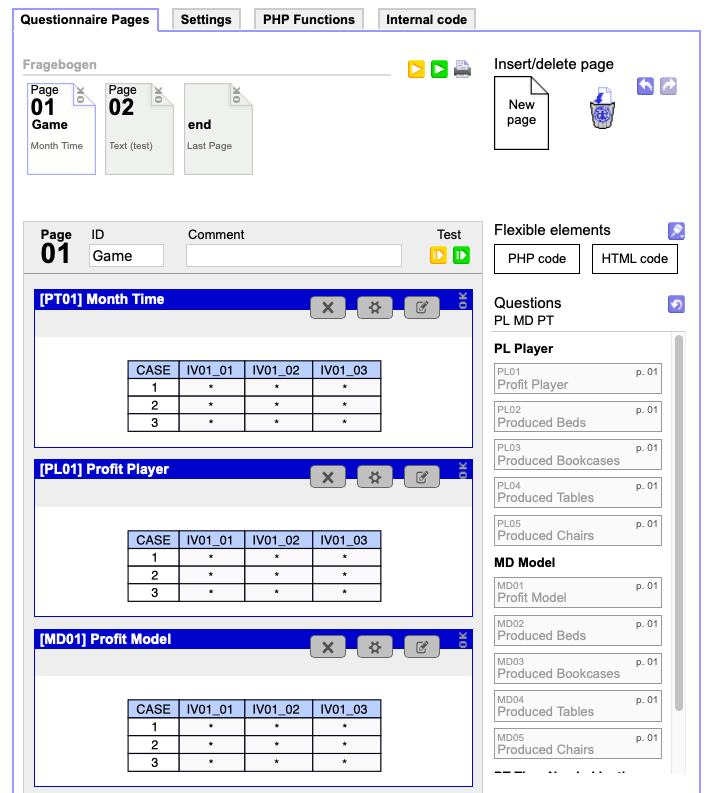

How to Run the Game on the Local Machine
- The game needs to run on a (virtual) webserver. To start a local webserver using python 2, the command
$ python -m SimpleHTTPServer [port]can be used inside the game folder. - After that the game can be started by opening
localholst:PORTinside the browser. - Make sure the constant ON_LOCAL_MACHINE in the file
Constants.jsis set totrue.
How to Host the Game on SosciSurvey
Note: This tutorial is intended to lead through a custom setup. There is an easier way to setup the project with all resources, variables and pages. Search for the tutorial "Uploading Project to SosciSurvey."
-
Create a new Project on the platform.
-
Create a new text element, set the formatting filed to
HTML codeand fill in the contents of theindex.htmlfile without the surrounding tags. It should look like the picture below:
-
Create a new questionnaire at the Menu point
Compose Questionnnaireand add the created text element by dragging it into the page placeholder.
-
Make sure the constant ON_LOCAL_MACHINE is set to
false. -
Upload all files except for the index.html file to SosciSurvey, under
Image and Medial Files. -
Test the game by clicking the green button inside the
Compose Questionnairemenu as shown above.
Adding Variables to SosciSurvey
-
At the menu
List of Questionsadd three new sections for the player, model and time. The IDs must match with the value of the constants SOSCI_PLAYER_VAR, SOSCI_MODEL_VAR and SOSCI_PLAYER_TIME_VAR inside the GameProperties.js file.
-
In the section
Playeradd a new Question for the Profit of the typeInternal Variables -
Use the Tab 'Import items directly', check the box 'Delete current items before inserting new ones' and copy the corresponding 12 values for player_profit from the following list into the text field.
-
Click the save button.

# For every question copy these 12 values into the textfield to add them to SosciSurvey. # Player Profit player_profit_month 1 player_profit_month 2 player_profit_month 3 player_profit_month 4 player_profit_month 5 player_profit_month 6 player_profit_month 7 player_profit_month 8 player_profit_month 9 player_profit_month 10 player_profit_month 11 player_profit_month 12 # Suggestion for GameProperties if the order of variable cration is followed. Make sure the variable number in GameProperties is the Same as the variable number of SosciSurvey In the GameProperties this variable should have the number: 01 # Player Produced Beds player_beds_month 1 player_beds_month 2 player_beds_month 3 player_beds_month 4 player_beds_month 5 player_beds_month 6 player_beds_month 7 player_beds_month 8 player_beds_month 9 player_beds_month 10 player_beds_month 11 player_beds_month 12 In the GameProperties this variable should have the number: 02 # Player Produced Bookcases player_bookcases_month 1 player_bookcases_month 2 player_bookcases_month 3 player_bookcases_month 4 player_bookcases_month 5 player_bookcases_month 6 player_bookcases_month 7 player_bookcases_month 8 player_bookcases_month 9 player_bookcases_month 10 player_bookcases_month 11 player_bookcases_month 12 In the GameProperties this variable should have the number: 03 # Player Produced Tables player_tables_month 1 player_tables_month 2 player_tables_month 3 player_tables_month 4 player_tables_month 5 player_tables_month 6 player_tables_month 7 player_tables_month 8 player_tables_month 9 player_tables_month 10 player_tables_month 11 player_tables_month 12 In the GameProperties this variable should have the number: 04 # Player Produced Chairs player_chairs_month 1 player_chairs_month 2 player_chairs_month 3 player_chairs_month 4 player_chairs_month 5 player_chairs_month 6 player_chairs_month 7 player_chairs_month 8 player_chairs_month 9 player_chairs_month 10 player_chairs_month 11 player_chairs_month 12 In the GameProperties this variable should have the number: 05 # Model Profit model_profit_month 1 model_profit_month 2 model_profit_month 3 model_profit_month 4 model_profit_month 5 model_profit_month 6 model_profit_month 7 model_profit_month 8 model_profit_month 9 model_profit_month 10 model_profit_month 11 model_profit_month 12 In the GameProperties this variable should have the number: 01 # Model Produced Beds model_beds_month 1 model_beds_month 2 model_beds_month 3 model_beds_month 4 model_beds_month 5 model_beds_month 6 model_beds_month 7 model_beds_month 8 model_beds_month 9 model_beds_month 10 model_beds_month 11 model_beds_month 12 In the GameProperties this variable should have the number: 02 # Model Produced Bookcases model_bookcases_month 1 model_bookcases_month 2 model_bookcases_month 3 model_bookcases_month 4 model_bookcases_month 5 model_bookcases_month 6 model_bookcases_month 7 model_bookcases_month 8 model_bookcases_month 9 model_bookcases_month 10 model_bookcases_month 11 model_bookcases_month 12 In the GameProperties this variable should have the number: 03 # Model Produced Tables model_tables_month 1 model_tables_month 2 model_tables_month 3 model_tables_month 4 model_tables_month 5 model_tables_month 6 model_tables_month 7 model_tables_month 8 model_tables_month 9 model_tables_month 10 model_tables_month 11 model_tables_month 12 In the GameProperties this variable should have the number: 04 # Model Produced Chairs model_chairs_month 1 model_chairs_month 2 model_chairs_month 3 model_chairs_month 4 model_chairs_month 5 model_chairs_month 6 model_chairs_month 7 model_chairs_month 8 model_chairs_month 9 model_chairs_month 10 model_chairs_month 11 model_chairs_month 12 In the GameProperties this variable should have the number: 05 # Indicates if a player had running workshops by the time the months has changed. interrupted_in_month 1 interrupted_in_month 2 interrupted_in_month 3 interrupted_in_month 4 interrupted_in_month 5 interrupted_in_month 6 interrupted_in_month 7 interrupted_in_month 8 interrupted_in_month 9 interrupted_in_month 10 interrupted_in_month 11 interrupted_in_month 12 In the GameProperties this variable should have the number: 06 -
Repeat for every question using the list above
-
Repeat the same in the section for the model.
-
Note: Maintain the same order for the player and model variables and make sure to fit the numbers of the questions with the values of the SOSCI constants inside the GameProperties.js file.
- Example: If the variable
Produced Bedshas the namePL02, then the model must have itsProduced Bedsvariable atMD02aswell. Inside the GameProperties.js the corresponding constantSOSCI_BEDSwill have the value'02'.
- Example: If the variable
-
Add a question to measure the time of the player and add a variable for each month like done above. Match the name of the question with the SOSCI_PLAYER_TIME_VAR constant inside the file GameProperties.js.
-
Now these variables are visible inside the
Compose Questionnairemenu. Drag them above the text element which contains the previously added HTML.
-
The values will be stored if a game has been finished.
Configure the Game
To make adjustments to the games behavior, the files GameProperties.js and Constants.js can be used.
Constants.js
Contains technical settings like:
- Size of several game objects
- Durations of animations
- values related to the linear model.
GameProperties.js
Contains game/experiment relevant settings such as:
- Decide which information the player should receive during the game
- Feedback texts and thresholds for the different feedbacks
- The SosciSurvey variable names.